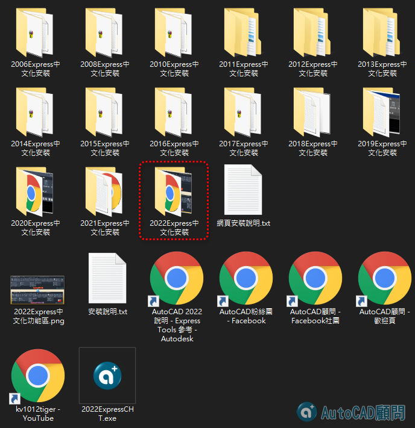
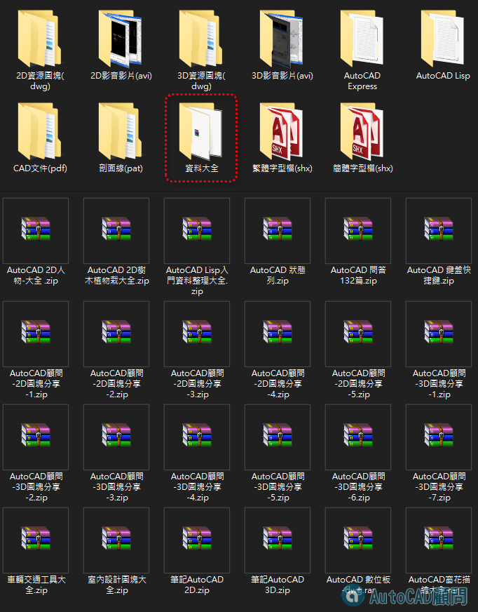

AutoCAD | 顧問論壇 | 大補帖光碟 https://youtu.be/Il6w1j60a-A
專屬B會員方案
1.期限:1年份 NT1,500元。
2.會員頭銜成為 專屬會員(勳章一枚)。
3.可以閱讀所有論壇版區。
4.可以下載所有資源文件。
5.擁有專屬討論區。
6.享有專題影片式解答幫助。
7.觀看影音教學(記得開喇叭)。
8.教學光碟(107支影片)。
9.AutoCAD顧問論壇大補帖(49支影音影片)。
10.觀看線上課程[專屬分享]AutoCAD 2D+3D入門(2010版)...(點我)
11.獨享後續更多論壇福利。
加入贊助B付費(點我)





大家好:
AutoCAD顧問論壇集結很多資源，其中包含蘋果爸整理「PDF文件大全」、「DWG圖塊大全」及「Express中文化工具」、「SHX簡繁字體檔」、「LISP外掛程式」、「AVI/MP4影音影片」、「2D+3D線上影片」及「CAD相關資料」。
如果您想要一次取得，可以加入贊助專屬B會員😺，還可以瀏覽論壇所有版區✌
擁有專屬討論版區，發問後由蘋果爸專屬回答服務😎
👷♀️加入「贊助專屬B會員」
👉 https://autocad-tw.1shop.tw/qm62pc
專屬B會員論壇說明：
https://www.autocad-tw.com/t2715-topic
================================
已經加入的專屬B會員朋友，請記得回下載新增資料😁
👇專屬資源版區👇
https://www.autocad-tw.com/f35-forum
===============================
❤️AutoCAD顧問教學產品總覽❤️
🍎訂閱【蘋果爸愛分享】YT頻道+小鈴鐺🛎